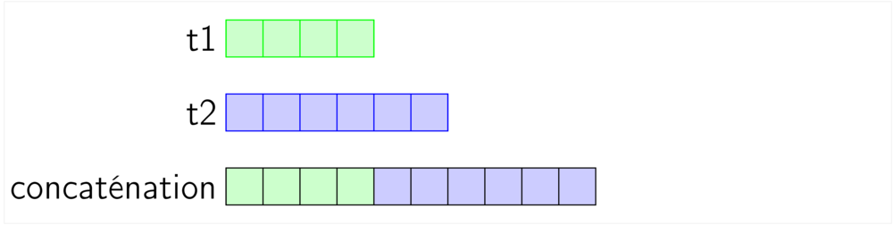
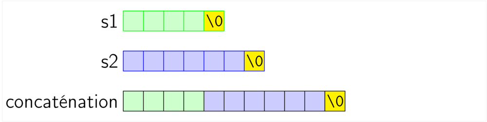
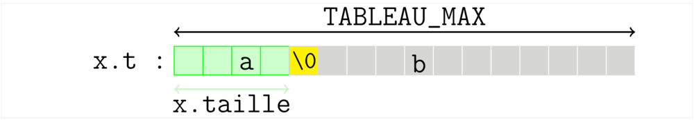
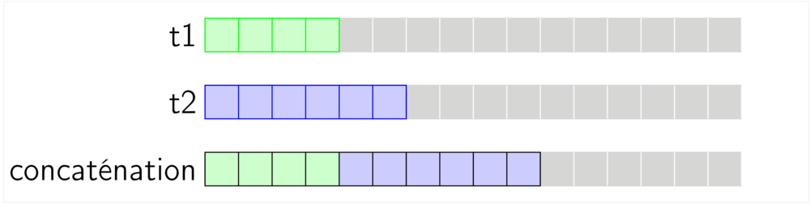
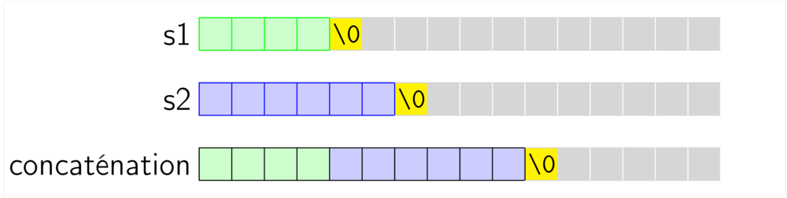
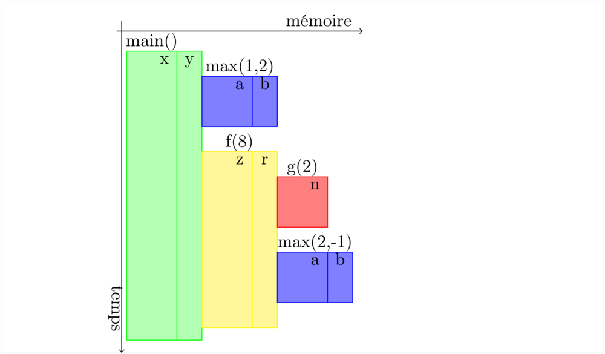
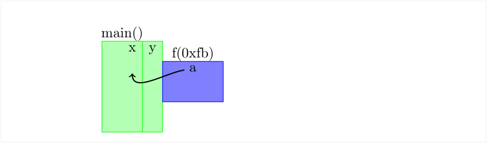

Toujours un peu plus loin
Table des matières
- 1 Retour sur la structuration de données et les tableaux
- 1.1 Quelques questions de programmation usuelles sur les tableaux
- 1.1.1 Somme des éléments d'un tableau
- 1.1.2 Somme en C
- 1.1.3 Remarques
- 1.1.4 Maximum des éléments d'un tableau
- 1.1.5 Concaténation
- 1.1.6 Concaténation: cas des chaînes de caractères
- 1.1.7 Tirage avec remise
- 1.1.8 Tirage sans remise
- 1.1.9 Mélanger un tableau
- 1.1.10 Partitionner un tableau
- 1.1.11 Éléments
- 1.2 Emballer les tableaux dans des struct
- 1.3 Limitations
- 1.4 L'allocation dymanique en deux mots : malloc et free
- 1.1 Quelques questions de programmation usuelles sur les tableaux
- 2 Pointeurs
- 3 Exercices
1 Retour sur la structuration de données et les tableaux
1.1 Quelques questions de programmation usuelles sur les tableaux
1.1.1 Somme des éléments d'un tableau
Soit un tableau de nombres. Calculer la somme de ses éléments.
- Algorithme
- Créer une variable
sommede type nombre et la mettre initialement à zéro - Pour chaque élément du tableau ajouter cet élément à la somme :
- pour l'ajout on peut utiliser
somme += t[i];
- pour le parcours on utilise un
for
- pour l'ajout on peut utiliser
- retourner
somme
- Créer une variable
1.1.2 Somme en C
- Code C
int t[5] = {8, 9, 3, 6, 7}; int somme = 0; int i; for (i = 0; i < 5; i += 1) { somme += t[i]; /* comme somme = somme + t[i] */ } printf("somme = %d\n", somme);
- Affichage
somme = 33
1.1.3 Remarques
- Par convention, le parcours se fait de gauche à droite (des plus petits indices aux plus grands)
- l'algorithme employé revient à calculer : \[(((((0 + 8) + 9) + 3) + 4) + 7).\]
- Le zéro est l'élément neutre de la somme, si on avait à faire un produit on utiliserait \(\ldots\)
1.1.4 Maximum des éléments d'un tableau
Soit un tableau de nombres. Calculer le maximum de ses éléments.
- Algorithme
- adaptation du précédent (parcours avec mise à jour de la valeur du maximum).
- Mais quelle valeur initiale donner à la variable maximum ?
Deux solutions :
- on prend le premier élément
t[0]comme valeur initiale du maximum - ou on prend une valeur représentant \(-\infty\) (neutre pour le maximum)
\[ max(\ldots max(max(max(-\infty, 8), 9), 3)\ldots, 7)\]
- on prend le premier élément
1.1.5 Concaténation
Soient deux tableaux t1 et t2. Réunir leurs éléments en seul
nouveau tableau, comme illustré.

Concaténation des tableaux t1 et t2
- Algorithme ?
1.1.6 Concaténation: cas des chaînes de caractères
Même chose pour des chaînes de caractères (il faut traiter différement la dernière case).

Concaténation des chaînes s1 et s2
1.1.7 Tirage avec remise
Soit un entier n et un tableau t de taille au moins n. Produire
un nouveau tableau de taille n fait d'éléments de t tirés au hasard, avec remise.
- Algorithme
- Créer un tableau
sde taillen - Pour chaque indice
ientre0etn - 1tirer un élément detau hasard et le placer danss[i]comme ceci :- tirer un indice
jau hasard entre0ettaille(t) - 1 - affecter la valeur
t[j]às[i]
- tirer un indice
- retourner le tableau
s.
- Créer un tableau
1.1.8 Tirage sans remise
Même question que précédemment mais sans remise. L'algorithme n'est plus le même, car il faut mettre de côté les éléments déjà tirés pour ne pas les tirer à nouveau :
- tirer un élément de
tcopier sas valeur dansset le mettre de côté
Comment mettre de côté un élément ?
1.1.9 Mélanger un tableau
On utilise le tirage avec remise.
1.1.10 Partitionner un tableau
Soit un tableau contenant des éléments ayant une couleur, rouge ou vert (par exemple, des boules de billard). Ranger le tableau de manière à placer tous les éléments rouges en premier, puis les éléments verts ensuite.
- Algorithme
- On partage le tableau en deux parties : la partie déjà rangée et la partie pas encore rangée.
un indice
isignale le début dans le tableau de la partie pas encore rangée. Au début la partie rangée est vide,ivaut 0. - Tant que la partie pas encore rangée contient des éléments,
- on range
l'élément
t[i]dans la partie rouge ou la partie verte, selon sa couleur. - on incrémente
i.
- on range
l'élément
- On partage le tableau en deux parties : la partie déjà rangée et la partie pas encore rangée.
un indice
1.1.11 Éléments
Pour coder la couleur on utilisera un entier et des constantes symboliques.
#define ROUGE 0 #define VERT 1 typedef struct boule_s { int couleur; int numero; } element_t; void afficher_boule(struct boule_s x) { if (ROUGE == x.couleur) { printf("boule rouge %d\n", x.numero); } if (VERT == x.couleur) { printf("boule verte %d\n", x.numero); } else{ printf("boule verte %d\n", x.numero);}; } int main() { element_t tab[3] = {{ROUGE, 1}, {VERT, 3}, {VERT, 42}}; afficher_boule(tab[2]); return EXIT_SUCCESS; }
- Sortie
boule verte 42
1.2 Emballer les tableaux dans des struct
1.2.1 Un type tableau facile à manipuler
- On manipule des tableaux d'éléments (des
intou desboule_t), d'une taille maximaleTABLEAU_MAXfixée à l'avance, en les emballant dans un type structure.
#define TABLEAU_MAX 64 typedef int element_t; typedef struct { element_t t[TABLEAU_MAX]; int taille; } tableau_t;
- De cette façon chaque variable de type
tableau_tcontient un tableautde 64 cases et un entiertaillequi détermine combien de ces cases contiennent des données utiles au programme.
Tableau statique emballé dans un struct, x.taille vaut 4, a fait officiellement partie du tableau, b non.
- pour les chaînes de caractère il faut décider si on compte la
sentinelle
\0dans la taille. Le mieux est que la taille corresponde au nombre de caractères utiles (on ne compte la sentinelle).

Tableau statique emballé dans un struct, x.taille vaut 4, a fait officiellement partie du tableau, b non.
1.2.2 Copie de tableau
Un tableau (statique) emballé dans un struct revient à avoir déclaré autant de variables que de cases de tableau dans le struct. Ainsi on peut copier tout le contenu d'un tableau en faisant juste une affectation.
tableau_t x = {{8, 9, 3, 6, 7}, 5}; tableau_t y = {{0, 1}, 2}; y = x;/* copie complete */ afficher_tableau(y);
- Affichage
8 9 3 6 7
1.2.3 Concaténation
Pour la concaténation, dans le cas général comme dans le cas de
tableaux contenant des chaînes (c'est à dire ayant une sentinelle), la
seule nouveauté avec le type tableau emballé dans un struct est qu'il
faut veiller à ne pas déborder de la taille maximale d'un tableau pour
l'écriture du résultat. La concaténation sera donc limitée à une somme
des tailles des tableaux t1 et t2 pas trop grande (inférieure à
TABLEAU_MAX dans le cas général).

Concaténation des tableaux t1 et t2

Concaténation des chaînes s1 et s2
1.2.4 Mélanger un tableau, ou tirage sans remise
Adaptation du tirage avec remise, mais en mettant de côté t[j].
- Mettre l'élément
t[j]de côté
Avec notre type structure pour les tableaux, il est facile de mettre de côté un élément :- on remplace
x.t[j]parx.t[x.taille - 1] - on décrémente
x.taille
- on remplace
1.3 Limitations
1.3.1 Limitation exagérée de l'espace mémoire
Capacité limitée \(\longrightarrow\) attention aux débordements !
- Avec la solution retenue jusque là, la taille maximale des tableaux
est limitée par
TABLEAU_MAX. Par exemple, la concaténation devra échouer lorsque le résultat est plus grand queTABLEAU_MAX - Augmenter
TABLEAU_MAXn'est pas une bonne solution si on doit manipuler des tableaux de tailles très différentes (on consomme inutilement de l'espace mémoire). - Pour échapper à cette limitation, il faut allouer dynamiquement la mémoire, c'est à dire faire des réservations mémoire à l'exécution du programme au lieu de les faire au moment de la compilation. Voir plus loin.
1.3.2 Nombre exagéré de copies de variables
- Lorsqu'on passe un tableau alloué statiquement et emballé dans un
struct comme paramètre à une fonction, tout son contenu est copié
(les
TABLEAU_MAXcases). C'est une bonne chose, car cela respecte le fonctionnement habituel pour le passage de paramètres (où ce sont les valeurs des paramètres qui sont passées), mais s'il ne s'agit que de lire le tableau sans le modifier, c'est inutilement coûteux en temps et en espace.
1.4 L'allocation dymanique en deux mots : malloc et free
Vous ne serez pas interrogés sur l'allocation dynamique dans ce cours.
1.4.1 réservation = =malloc=(taille espace)
Crée une nouvelle réservation d'espace mémoire d'une durée de vie non limitée.
- réserve des portions de mémoire auprès du système d'exploitation
- découpe les portions demandées dans ces espaces mémoires.
1.4.2 =free=(réservation)
Annule une réservation d'espace mémoire.
- La mémoire est aussi libérée à la fin de l'exécution.
- Oublier de libérer des réservation c'est créer des processus qui vont peu à peu surcharger le système en s'allouant toute la mémoire. On parle de fuite mémoire
2 Pointeurs
Un pointeur est une variable dont la valeur est une adresse mémoire.
Si n est une variable &n est l'adresse de la case mémoire associée
et si p est un pointeur sur une case mémoire, *p est le contenu de
cette case (et *p peut être utilisé comme une case mémoire). Avec
cette notation *p, on dit qu'on déréférence le pointeur p (on
obtient la valeur pointée). On parle également d'indirection : on ne
donne pas directement la valeur cherché, on fournit un moyen indirect de
l'atteindre en donnant son adresse.
int *p; /* <-- Déclaration d'un pointeur. la case mémoire pointée contiendra un entier. */ int n = 1; int m = 2; printf("n = %d, m = %d, p = %p\n", n , m, p); printf("adresse de n : %p\n", &n); /* affichage d'adresses mémoires (ou de pointeurs) */ printf("adresse de m : %p\n", &m); p = &n; /* p pointe sur la case mémoire de n */ printf("p = %p, valeur pointée par p: %d\n", p, *p); /* *p = la case pointée par p */ *p = 42; p = &m; printf("n = %d, m = %d, p = %p, *p = %d\n", n , m, p, *p);
- Affichage
n = 1, m = 2, p = 0x0 adresse de n : 0x7fff6dd3e9d4 adresse de m : 0x7fff6dd3e9d0 p = 0x7fff6dd3e9d4, valeur pointée par p: 1 n = 42, m = 2, p = 0x7fff6dd3e9d0, *p = 2
2.1 Passage de paramètres par adresses
Lors de l'exécution d'un appel de fonction les paramètres effectifs
sont évalués et les valeurs trouvées servent à initialiser les
paramètres formels de la fonction. Passer des variables comme
paramètres effectifs à une fonction f ne conduit pas à pouvoir modifier ces variables dans
le code de la fonction f, puisque seules leurs valeurs sont
communiquées. Les espaces mémoires des fonctions apparaissent ainsi isolés les uns
des autres.

Pile d'appel : les paramètres sont passés par valeur
Une méthode très utilisée pour contourner cette isolation est de
transmettre les adresses des variables entre fonctions. Ainsi si
main() appelle une fonction f() en lui passant en paramètre
l'adresse d'une variable n de main(), alors f() pourra modifier
la valeur de la variable n (l'exemple est donné en exercice, plus
bas). Notez bien que cela ne contredit pas le fait que ce sont les
valeurs des paramètres effectifs qui sont transmises, une adresse est
une valeur.

Pile d'appel : passage de l'adresse d'une variable
2.1.1 Pointeurs et tableaux
Lorsqu'on déclare un tableau, par exemple avec l'instruction int t[4], on déclare en réalité 5 variables :
- les 4 cases du tableau
t[0],t[1],t[2],t[3] - et la variable
tqui est en réalité un pointeur sur la première case du tableau (c'est à dire quetest égal à&(t[0])).
La notation t[i] peut quant à elle s'appliquer à n'importe quel
pointeur t, il n'est pas nécessaire qu'il provienne d'une
déclaration de tableau. Sans rentrer dans les détails, si p est un
pointeur, p[0] est équivalent à *p, et p + 1 est la case mémoire
suivant celle pointée par p et p[1] est le contenu de cette
case, etc.
On peut bien entendu passer en argument t à une fonction f, ceci
aura pour effet de faire connaître à cette fonction l'adresse de t,
on l'on pourra alors accèder aux cases du tableau normalement par la
notation t[i]. Le paramètre formel qui reçoit la valeur de t dans
la fonction f doit alors avoir un type de pointeur : void f(..., int *t, ...). Lorsqu'il s'agit de définir le type d'un tel paramètre
formel on peut également écrire (uniquement dans une déclaration de fonction) :
void f(..., int t[], ...).
2.1.2 Pointeurs et struct
Pour éviter de copier tout un struct on peut préférer passer son
adresse en paramètre à une fonction, plutôt que sa valeur. Pour ce cas
relativement fréquent, où il faut dérérencer un pointeur avant
d'accèder aux champs d'un struct, le C possède une notation
particulière p->a. Si p est un pointeur sur un struct alors (*p)
est le struct pointé, (*p).a est le champs a de ce struct et
p->a est une autre notation pour (*p).a.
2.1.3 Éviter les copies inutiles
Une variable passée en paramètre à une fonction vera sa valeur copiée
dans la variable représentant le paramètre formel. Si ces variables
occupent de grands espaces mémoire, ce qui est le cas avec le type
tableau_t, le temps de copie va un peu ralentir le programme.
Passer les tableaux en paramètre aux fonctions par adresse, permet d'éviter de recopier leurs contenus. On dit que les fonctions travaillent en place sur les tableaux.
3 Exercices
3.1 algorithmes sur les tableaux
Voici un programme complet utilisant des tableaux emballés dans des struct et calculant la somme des éléments d'un tableau. Pour toutes les questions suivantes vous pouvez travailler sur le même fichier source.
#define TABLEAU_MAX 64 typedef int element_t; typedef struct { element_t t[TABLEAU_MAX]; int taille; } tableau_t; void afficher_element(element_t e); void afficher_tableau(tableau_t t); element_t somme(tableau_t x); int main() { tableau_t x = {{0, 8, 4, 1, 7}, 5}; printf("Tableau : "); afficher_tableau(x); printf("Somme : "); afficher_element(somme(x)); printf("\n"); return EXIT_SUCCESS; } void afficher_element(element_t e) { printf("%d", e); } void afficher_tableau(tableau_t x) { int i; for (i = 0; i < x.taille; i += 1) { afficher_element(x.t[i]); printf(" "); } printf("\n"); } element_t somme(tableau_t x) { int i; element_t somme = 0; for (i = 0; i < x.taille; i += 1) { somme += x.t[i]; } return somme; }
Tableau : 0 8 4 1 7 Somme : 20
Question A. Supposons que les éléments de nos tableaux soient maintenant des nombres à virgule et non des entiers. Que devez-vous changer dans ce programme ?
Question B. L'affectation permet de copier un tableau lorsqu'il est
emballé dans un struct. Est-ce que toutes les cases sont copiées ou
seulement x.taille cases ? Mettre en évidence ce fait par un
programme.
Question C. Ajouter (déclarer et définir et ajouter un appel dans le
main) une fonction moyenne() calculant la moyenne des éléments d'un
tableau. Faire appel à la fonction somme. De quel type doit être sa sortie ?
Si x est un tableau dans le main, combien de copie complètes de x déclenchera l'appel moyenne(x) ?
Question D. Voici une version en place de la fonction afficher_tableau. Que signifie en place ?
void afficher_tableau_sanscopier(int t[], int taille) { int i; for (i = 0; i < taille; i += 1) { afficher_element(t[i]); printf(" "); } printf("\n"); }
Question E. Voici une autre version d'un afficher_tableau en place
qui exploite cette fois-ci la nature de struct du type tableau_t.
On l'appelle en lui passant l'adresse d'une variable
tableau_t. Remplacer la fonction afficher_tableau de votre
programme par celle-ci. Tester le programme. Réécrire également la
fonction somme et la fonction moyenne dans ce style.
void afficher_tableau(tableau_t *p) { int i; for (i = 0; i < p->taille; i += 1) { afficher_element(p->t[i]); printf(" "); } printf("\n"); }
Question F. Écrire une fonction réalisant la concaténation de deux
tableaux. Pouvez-vous lui donner le type suivant (sa déclaration) ?
tableau_t concatener(tableau_t *x, tableau_t *y);
Question G. Écrire une fonction qui vérifie que chaque élément d'un tableau y apparaît une seule fois (tableau sans répétition). Avez-vous besoin de savoir comment est fait le type elementt ?
Question H. On suppose maintenant que les éléments sout des boules
de couleur (deux couleurs possibles, rouge ou vert) portant un numéro
(voir le type boule_s plus haut). Modifier les fonctions
d'affichage de somme et de moyenne de manière à afficher la couleur
et le numéro et à caluler uniquement sur les numéros (somme des
numéros etc.).
Question I. Écrire une fonction réalisant la partition d'un tableau, de plusieurs façons. Commencez par utiliser des tableaux auxilliaires, puis faîtes un algorithme en place.
Question J. Écrire deux fonctions réalisant le tirage avec remise et
le tirage sans remise d'un tableau de n éléments parmis x où x
est un tableau d'éléments de au moins n éléments.
3.2 Afficher paire
Question K. Créer (déclarer) un type structure paire contenant deux
entiers g et d (pour gauche et droite) et créer (déclarer et
définir) une procédure afficher_paire() qui affichera les valeurs
d'une paire. tester dans un petit programme.
struct paire_s x = {37, 44}; /* x correpond à la paire g = 37, d = 44 */ afficher_paire(x); /* affichera : gauche 37, droite 44 */
3.3 Pointeurs : passage d'argument par adresse
Question L. En ne modifiant que le code (la définition) de la fonction f(), faire en
sorte que le programme suivant n'affiche que des bonnes notes.
void f(int *p); int main() { int n = 5; f(&n); /* f connaît l'adresse de n, f peut donc modifier n */ printf("votre note %d/20\n", n); return EXIT_SUCCESS; } void f(int *p) { if (*p < 15) { /* faire quelque chose ! */ } }
- Sortie
votre note 5/20